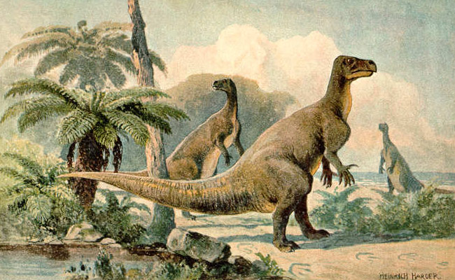

Hadrosaurids are descendants of the Upper Jurassic/Lower Cretaceous iguanodontian dinosaurs and had a similar body layout.
IGUANODON

Iguanodon is a genus of ornithopod dinosaur that existed roughly halfway between the first of the swift bipedal hypsilophodontids of the mid-Jurassic and the duck-billed dinosaurs of the late Cretaceous.
STEGOSAURUS
Due to their distinctive combination of broad, upright plates and tail tipped with spikes, Stegosaurus is one of the most recognizable kinds of dinosaur.